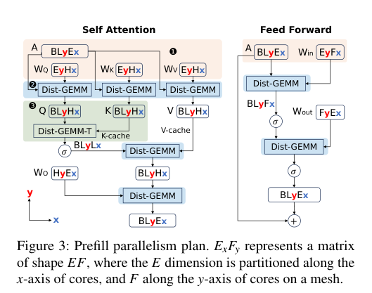
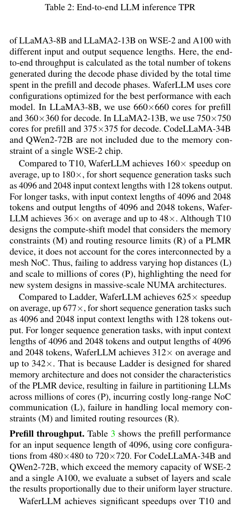
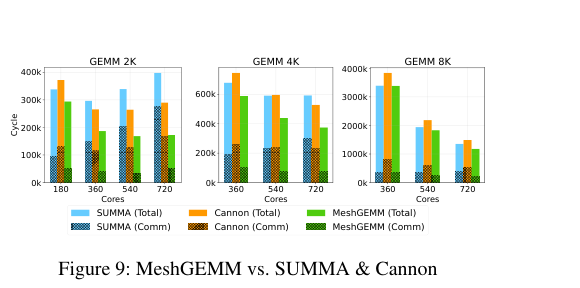
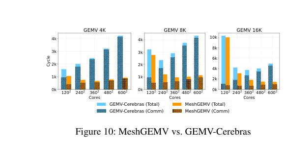
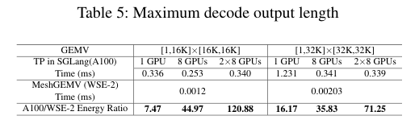

本报告由大模型自动生成，可能存在理解、归纳或数据转述错误；请以原论文为准。 WaferLLM: Large Language Model Inference at Wafer ScaleCongjie He, Yeqi Huang, Mu, Pei, Ziming Miao, Xue, Jilong, Lingxiao Ma, Fan Yang, Luo Mai · arXiv (Cornell University) · 2025 · 原文 · PDF 报告模型：gemini-3.1-pro-preview / high 本文详细介绍了发表于 2025 年的计算机体系结构与系统论文《WaferLLM: Large Language Model Inference at Wafer Scale》。该研究针对大型语言模型（LLM）推理过程中的内存带宽瓶颈，首次提出了一套专门为晶圆级（Wafer-Scale）加速器设计的端到端 LLM 推理系统。 以下是按论文逻辑主线与章节结构的详细解析。 1. 导言与背景（Introduction & Background）问题背景与概念补充 当前的大型语言模型（LLM）推理是一个快速增长的计算负载。为了帮助理解，这里补充一些基础背景：LLM 推理通常分为两个阶段。第一阶段是“预填充（Prefill）”，系统并行处理用户输入的提示词（Prompt）序列，该阶段主要执行密集的通用矩阵乘法（GEMM，General Matrix Multiply）。第二阶段是“解码（Decode）”，系统以自回归的方式逐个生成新词（Token），该阶段主要执行通用矩阵向量乘法（GEMV，General Matrix-Vector Product）。在解码阶段，系统每次生成一个词都需要将整个庞大的模型权重从存储器加载到计算核心，因此该阶段极度受限于内存带宽（Memory-bandwidth-bound）。 为了突破内存带宽瓶颈，硬件架构师开始采用“晶圆级集成（System-on-Wafer）”技术。背景补充：传统的芯片制造是将一块硅晶圆（Wafer）切割成许多独立的小裸片（Die，例如单颗 GPU），而晶圆级加速器（如 Cerebras WSE-2）则不进行切割，直接在一整块晶圆上集成数以十万计的计算核心。这种硬件强制的架构约束带来了海量的片上分布式 SRAM 内存和极高的片上网络（NoC，Network-on-Chip）带宽，能够提供远超传统 GPU 集群的性能。 现有系统的局限性 尽管理论性能极高，但现有的软件系统（如 SGLang、vLLM）以及深度学习编译器（如 Ladder、T10）无法充分利用晶圆级芯片。这是因为现有系统大多针对“共享内存”架构（如单颗 GPU）或“全连接拓扑”架构（如 GPU 集群）进行设计。然而，晶圆级芯片因为面积过于庞大，物理布线成本极高，被迫采用了大规模的网格（Mesh）拓扑片上网络。在这种硬件约束下，数百万个核心只能与自己物理位置相邻的核心直接通信，跨核心访问数据的延迟差异巨大。直接将传统系统生搬硬套到晶圆级设备上，会导致极其低下的性能。 2. 晶圆级加速器的设备模型（Device Model for Wafer-Scale Accelerators）为了弥合底层物理硬件与上层软件编译器之间的鸿沟，作者提出了一种跨层抽象的代价模型——PLMR 模型。这体现了体系结构与系统设计（类似 EDA 中的软硬协同优化）之间的双向联系：物理布局、布线拓扑、存储层次被转换为软件编译器调度数据流和划分计算任务时的目标函数与约束条件。具体而言，该模型将核心数、最差情况延迟、局部内存容量和路由路径数作为传递的量、目标或约束；其建模假设了最差情况下的内存访问延迟，从而在信息传递过程中损失了非最差情况下的具体拓扑距离信息。该模型包含四个关键硬件属性，定义如下：
现有的分布式内存系统编译器（如 T10）虽然考虑了 M 和 R 的限制，但假设了全局一致的延迟，忽略了网格架构中的 L 属性，且无法扩展到数百万核心的 P 属性规模，因此在晶圆级设备上表现不佳。 3. 晶圆级大语言模型并行化策略（Wafer-Scale LLM Parallelism）在确立了 PLMR 约束模型后，WaferLLM 针对 LLM 推理的预填充、解码以及键值缓存（KV Cache）管理提出了全新的软件设计选择。 在预填充阶段（Prefill），面对庞大的输入激活矩阵和权重矩阵，系统采用了一种二维细粒度划分策略，将张量同时沿网格的 X 轴和 Y 轴分配到核心上，以满足 P 属性（海量并行）。特别地，为了严格遵守 L 属性（非均匀延迟），作者在设计自注意力机制（Self-Attention）的计算时，选择放弃传统软件框架中常用的矩阵转置（Matrix Transpose）操作。因为在网格拓扑中，矩阵转置要求处于对角线位置的核心相互发送数据，这会引发贯穿整个晶圆的极高延迟长距离通信。作为替代，作者引入了无转置的分布式 GEMM。此处需指出，原文在图 3 的标注中使用了符号 来代表输入序列长度（Sequence Dimension），单位原文未说明，这与 PLMR 模型中的延迟属性 存在符号冲突，读者在阅读时需根据上下文区分其代表的空间维度量还是物理延迟量。  在解码阶段（Decode），由于每次只处理单个或极少量 Token，张量维度不足以进行大规模切分。为了维持极高的并行度，作者设计了细粒度复制策略。系统将序列长度这一维度在 X 轴上进行复制分配，这不仅保证了所有核心的负载均衡，还避免了像传统方法那样需要横跨整个网格进行全局归约（Allreduce）操作，从而将通信开销降至最低。 在键值缓存（KV Cache）管理方面，WaferLLM 彻底摒弃了现有系统常用的“拼接（Concatenate）”方法。背景补充：KV Cache 是 LLM 推理中保存历史生成词状态的张量缓冲，拼接方法是直接将新生成的词状态追加到缓存末尾。如果在晶圆级设备上采用拼接法，会导致负责存储最新状态的某一列核心迅速耗尽内存，违背 M 属性，并造成其他核心闲置，违背 P 属性。为此，作者设计了软件层面的“轮转偏移（Shift-based）”策略：当产生新的 KV 数据时，整个网格中的核心将自己保存的最旧数据向上一行核心传递，以此类推，确保数据像传送带一样均匀分布在整个物理网格中。这种物理分布严格对应逻辑上的连续性，每次移动只涉及相邻核心，遵循了 L 属性。 4. 晶圆级矩阵乘法与向量乘法（Wafer-Scale GEMM & GEMV）本节详细阐述了支撑预填充和解码阶段的两项核心底层算法：MeshGEMM 和 MeshGEMV。这两者是作者为了契合 PLMR 模型而专门设计的分布式通信调度算法。 MeshGEMM（用于预填充阶段）： 现有的分布式矩阵乘法（如 GPU 集群常用的 Allgather 方法，或超级计算机常用的 Cannon 算法）由于通信跳数过长或消耗过多路由路径，无法在晶圆网络上扩展。MeshGEMM 算法的核心设计是一种交织（Interleave）的循环移位机制。通过特殊的软件映射算法（定义在 Algorithm 1 中），MeshGEMM 在逻辑上将通信重排，使得物理执行时每个核心只与距离自己两跳（Two-hop）的核心进行通信。这种设计使得每个核心的通信路径数量保持为常量 ，满足路由约束 R；峰值内存占用也维持在最优的 （其中 为标量整数，表示网格一维上的切片数量，单位原文未说明），满足约束 M；同时其关键路径延迟被严格绑定为 ，消除了长距离传播，能够独特地解决 L 属性问题。 MeshGEMV（用于解码阶段）： GEMV 操作通常需要各个核心计算局部和，然后再将结果汇总（Allreduce）。传统的环形归约（Ring Allreduce）或流水线归约（Pipeline Allreduce）都存在关键路径贯穿全部 个核心的问题，导致延迟达到 级别。作者提出了 K-树归约（K-tree Allreduce）算法。 该算法构建了一棵平衡的 K 叉树，其最差关键通信路径延迟（计算结果量）被定义为公式：。其中符号沿用上文，新引入的标量整数 代表树的分支因子（或阶段数，如二叉树时 ），代表算法设定的超参数，单位原文未说明。该公式表明，该设计通过消耗少量的路由资源（路径数量增加到 ），在远端核心之间建立直通路径，极大地削减了需要软件介入转发的阶段，从而显著降低了通信延迟。 5. 系统评估与未来展望（Evaluation & Future Direction）在评估部分，作者在一台配备 Cerebras WSE-2（具有 85 万个计算核心）的服务器上进行了详尽的实验，评估指标主要采用 TPR（Throughput per Request，每请求吞吐量），即生成所有 Token 的总数除以端到端总延迟。 实验结果（如表 2 和图 9、图 10 所示）强有力地支撑了论文的核心观点：直接将适配共享内存架构的编译器（如 Ladder）或适配交叉开关架构的编译器（如 T10）应用于晶圆级设备，会导致性能暴跌。通过利用 MeshGEMM 和 MeshGEMV，WaferLLM 在端到端 LLM 推理（如 LLaMA3-8B 等模型）中，比 T10 和 Ladder 实现了两到三个数量级的速度提升。同时，在与基于 8 到 16 张 NVIDIA A100 GPU 集群（采用 SGLang 系统）的对比中，WaferLLM 在吞吐量上取得了 10 到 20 倍的绝对优势，并在能效（Energy Efficiency）上获得了 2.5 倍的提升，这证明了晶圆级片上 SRAM 连接相比于 GPU 跨板 PCIe/NVLink 连接在物理层面上具备显著的能量和延迟红利。此外，Shift-based 的缓存管理机制使得单设备可支持的序列长度容量增加了 360 至 385 倍（表 5）。     在展望部分，作者诚实地指出了当前的系统局限。首先是硬件侧，当前 WSE-2 的 48KB 极小单核 SRAM 仍然限制了张量并行的发挥，导致软件被迫采用流水线并行从而产生执行气泡。其次是软硬协同侧，大型语言模型极度渴求接近 1:1 的存算比，未来的晶圆级加速器（如 WSE-3 和 Tesla Dojo）通过增加核心局部内存，将能进一步释放 WaferLLM 架构的潜能。原文未证实部分（由于缺乏 WSE-3 实机），作者推测其设计在较新工艺节点下能直接对抗 NVIDIA H100 等新一代硬件。 总结贯穿《WaferLLM》全文的主线是“如何打破传统软件系统与新型超大规模网格硬件之间的壁垒”。作者敏锐地发现，导致 LLM 在晶圆级芯片上效率低下的根本原因，是旧软件体系忽略了海量、受限、非均匀的片上分布式网络特性。通过提炼出涵盖并行度、延迟、内存与路由四个维度的 PLMR 约束模型，作者在编译器后端通信模式、矩阵乘法算法以及内存管理上做出了一系列专门针对相邻通信优化的软件设计选择。这不仅解决了大规模网格上的长距离通信瓶颈，也成功将晶圆级计算引入到了大模型推理的实战之中。不过，该框架的理论极限依然受到当前硅片单核 SRAM 容量绝对物理上限的制约，其长远优势还需依赖下一代晶圆级芯片在存算比上的持续改进。 |